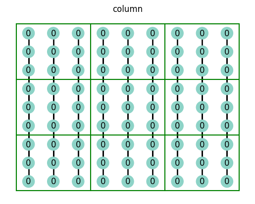
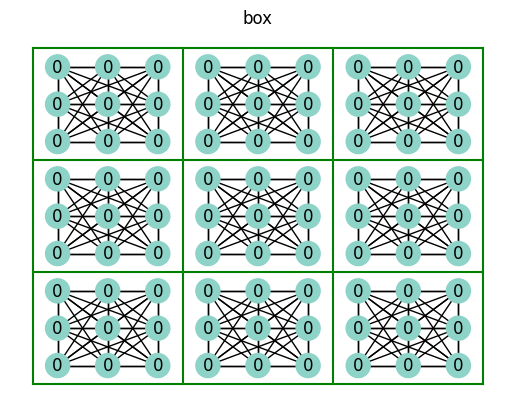
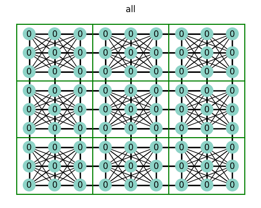
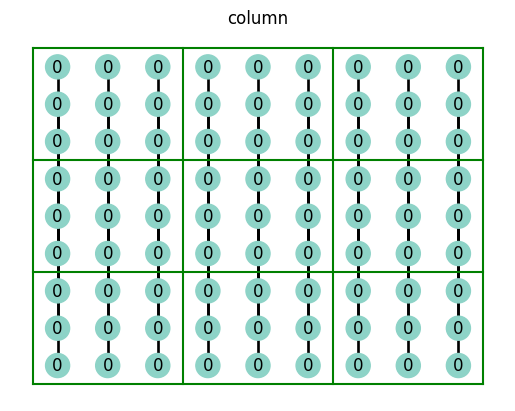
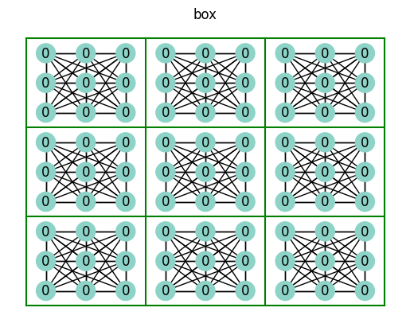
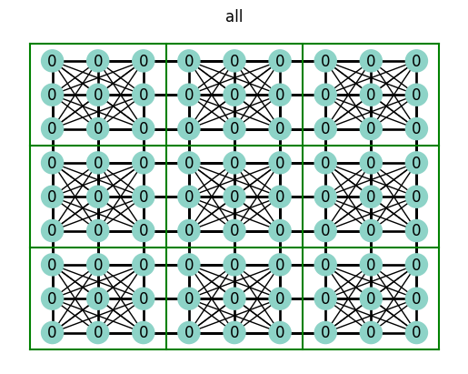
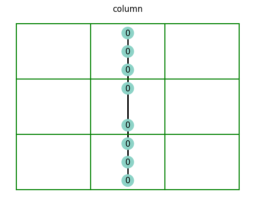
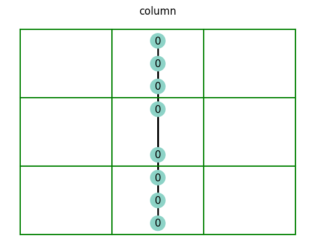
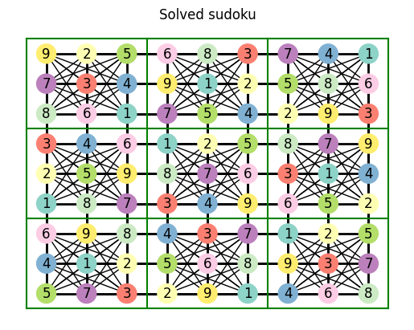
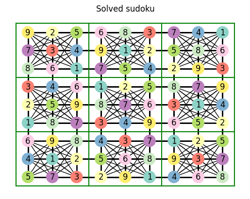

Sudoku Solver#
Why not try to write a sudoku solver in Python? I mean, how hard can it be?
No Backtracking, Please…#
A quick google search for how to solve sudokus programmatically will give you many backtracking solutions. While backtracking is a great way to solve sudokus, I personally just don’t like it. Backtracking can be summarized as follows:
For every empty cell, guess a random number. If an incorrect number has been guessed, then backtrack and guess a different number. Repeat until the sudoku is solved.
Backtracking not only lacks elegance, but, from an algorithmic perspective, it’s not very efficient. Let’s see if we can do something better!
Graph Processing Approach#
The cells of a sudoku are connected to one another in interesting ways; the value of one cell effects the values of other cells, which in turn effects other cells, and so on. These types of connections can be elegantly modeled using graph processing.
The purpose of this tutorial is to see if we can use graph-processing to solve a sudoku.
Note
This tutorial is limited to 9x9 sudokus. It should technically be possible to generalize this solution and make it work with other sizes of sudokus, but that’s outside the scope of this article.
Sudoku Data Structure#
We will use networkx for its wonderful graph functionalities.
We represent each cell of the sudoku as a node,
and each node will be identified by its row-column
position in the sudoku grid. Position (0,0)
is the top-left cell, and position (8,8) is the bottom-right cell.
We represent the connections between nodes by edges. Cells can be connected by being in the same row, edge, or box. Cells can be connected to each other either by being in the same row, column, or box.
Since cells can be connected to one another in multiple ways
(e.g. (0,0) is connectod to (0,1) by being in the same row
and in the same box), we will use a MultiGraph to model our
sudoku.
Note
Many graph-processing algorithms don’t work correctly with a MultiGraph. This is something to keep in mind. Luckily we can easily convert our graph to a Graph. See the MultiGraph documentation for more details.
import itertools
import matplotlib.pyplot as plt
import networkx as nx
Sudoku = nx.MultiGraph
def gen_sudoku() -> Sudoku:
n = 3
dim = n * n
sudoku = Sudoku()
sudoku.graph["possible_values"] = set(range(1, 10))
# Create a node for each cell in the sudoku
for row, col in itertools.product(range(dim), range(dim)):
# Each node is the row-column, and has a 'value'
# We set the value to '0' initially
sudoku.add_node((row, col), value=0)
# Create the edges for each combination of nodes
sudoku.graph["connections"] = ["row", "column", "box"]
for n1, n2 in itertools.combinations(sudoku.nodes, r=2):
n1_row, n1_col = n1
n2_row, n2_col = n2
n1_box = [i // n for i in [n1_row, n1_col]]
n2_box = [i // n for i in [n2_row, n2_col]]
if n1_row == n2_row:
sudoku.add_edge(n1, n2, connection="row")
if n1_col == n2_col:
sudoku.add_edge(n1, n2, connection="column")
if n1_box == n2_box:
sudoku.add_edge(n1, n2, connection="box")
return sudoku
sudoku = gen_sudoku()
Visualizing the Sudoku#
Now that we have a sudoku data structure, let’s visualize it.
def plot_sudoku(sudoku) -> None:
# - node (0,0) is at pos (0,8)
# - node (0,1) is at pos (1,8)
# - node (8,8) is at pos(8,0)
pos = {n: (n[1], 8 - n[0]) for n in sudoku.nodes}
# we label the nodes with their values
labels = {n: sudoku.nodes[n]["value"] for n in sudoku.nodes}
# the color of each node will be based on its value
node_color = [v for v in labels.values()]
nx.draw(
sudoku,
pos=pos,
labels=labels,
with_labels=True,
font_color="black",
node_color=node_color,
cmap=plt.cm.Set3,
)
low = -0.5
high = 8.5
lines = [low, 2.5, 5.5, high]
for line in lines:
plt.plot([line, line], [low, high], color="g")
plt.plot([low, high], [line, line], color="g")
plt.show()
plot_sudoku(sudoku)

Understanding the complex connections#
The whole point of using a graph data structure was to represent the connections between the nodes. We will be taking our multi-graph, which has nodes connected in multiple ways, and split it up into graphs whose nodes are only connected in a single way.
def get_connection_sudoku_map(sudoku: Sudoku) -> dict[str, nx.Graph]:
all_nodes = list(sudoku.nodes(data=True))
all_edges = [(u, v, c) for (u, v, c) in sudoku.edges(data="connection")]
sudoku_connections = {}
for conn in sudoku.graph["connections"]:
sc = nx.Graph()
sc.add_nodes_from(all_nodes)
edges_to_keep = [(u, v) for u, v, c in all_edges if c == conn]
sc.add_edges_from(edges_to_keep)
sudoku_connections[conn] = sc
sc_all = nx.Graph()
sc_all.add_nodes_from(all_nodes)
sc_all.add_edges_from([u, v] for u, v, c in all_edges)
sudoku_connections["all"] = sc_all
return sudoku_connections
def plot_connections(sudoku_connections):
for conn, sc in sudoku_connections.items():
plt.title(conn)
plot_sudoku(sc)
sudoku_connections = get_connection_sudoku_map(sudoku)
plot_connections(sudoku_connections)
 





The row, column, and box connections make sense to you, but you’re probably wondering about the all connection… What this represents is all of the nodes an individual node is connected to; the all connection encompasses the row-column-box connection.
Connected components#
Take a look at the row plot above. You’ll see that one row is not connected to any other row. An individual row, in In graph terminology, constitutes a connected component. A connected component is a collection of nodes that are connected to one another. In our case, there are as many connected components in the row graph as there are rows. The same is true for all of the different connection graphs above.
first_row_nodes = list(nx.connected_components(sudoku_connections["row"]))[0]
plot_sudoku(sudoku.subgraph(first_row_nodes))
Here’s the first box.
first_box_nodes = list(nx.connected_components(sudoku_connections["box"]))[0]
plot_sudoku(sudoku.subgraph(first_box_nodes))
I won’t plot al of the connected components of all of the different connections, but you get the point.
Node neighbors#
The neighbors of a node are the nodes that it is connected to. Let’s take a look at all the different ways an individual node is connected to other nodes.
def plot_sudoku_connection_neighbors(sudoku, node):
sudoku_connections_neighbors = {}
for conn, sc in sudoku_connections.items():
neighbors = sc.neighbors(node)
sub = sc.subgraph(neighbors)
sudoku_connections_neighbors[conn] = sub
plot_connections(sudoku_connections_neighbors)
plot_sudoku_connection_neighbors(sudoku, (4, 4))
 



Creating a solver#
Now we’re ready to get started on solving a sudoku! First, we need a way to tell if a sudoku is solved or not.
def is_sudoku_solved(sudoku: Sudoku) -> bool:
# a sudoku is unsolved if there are any zeros
if any([v == 0 for n, v in sudoku.nodes(data="value")]):
return False
# a sudoku is unsolved if any 'connected-components' of any 'connections'
# don't have all numbers 1-9
for conn, sc in get_connection_sudoku_map(sudoku).items():
for cc in nx.connected_components(sc):
values = set(sudoku.nodes[n]["value"] for n in cc)
if len(values) != len(sudoku.graph["possible_values"]):
return False
# if we made it this far, then sudoku is solved
return True
assert not is_sudoku_solved(sudoku)
Now let’s create a function for solving a sudoku. Remember that we want our solver to follow the same logical steps that we would take for solving a sudoku:
We start with an unsolved sudoku
We use a technique to solve the value(s) of nodes(s)
If our technique worked, then we update the value of those cells
If our technique did not work, we try to use a more advanced technique
If all of our techniques did not work… then we admit defeat!
Here’s what that might look like in code:
def apply_updates(sudoku, updates):
for node in updates:
if sudoku.nodes[node]["value"] != 0:
raise ValueError(
"Trying to set value of node that's already set", node, sudoku
)
sudoku_updated = sudoku.copy()
for node, value in updates.items():
sudoku_updated.nodes[node]["value"] = value
return sudoku_updated
def solve_sudoku(sudoku, *techniques) -> Sudoku:
# let's copy the original sudoku
solved_sudoku = sudoku.copy()
while not is_sudoku_solved(solved_sudoku):
# we try one technique at a time
for technique in techniques:
# if a technique works
if nodes_to_update := technique(solved_sudoku):
# then we update the nodes
solved_sudoku = apply_updates(solved_sudoku, nodes_to_update)
# breaking means that we simply start restart the 'for-loop'
# starting from the first technique
break
else:
raise RuntimeError("Cannot solve sudoku", solved_sudoku)
return solved_sudoku
def try_solve_sudoku(sudoku, *techniques) -> Sudoku:
plt.title("Original sudoku")
plot_sudoku(sudoku)
try:
# %timeit solve_sudoku(sudoku, *techniques)
solved_sudoku = solve_sudoku(sudoku, *techniques)
title = "Solved sudoku"
except RuntimeError as exc:
msg, solved_sudoku = exc.args
title = msg
except ValueError as exc:
msg, node, solved_sudoku = exc.args
title = "f{msg}, {node}"
plt.title(title)
plot_sudoku(solved_sudoku)
Let’s create our first technique.
This is just a silly technique of applying a value
to a node based on its position… it will only
work for a our sudoku where all values are 0.
def ascending_values_technique(sudoku):
nodes_to_update = {}
for n in sudoku.nodes:
r, c = n
br = r // 3
val = (r * 3 + c + 1 + br) % 9 or 9
nodes_to_update[n] = val
return nodes_to_update
try_solve_sudoku(sudoku, ascending_values_technique)

So far we have laid the groundwork for solving sudokus, but we literally haven’t solved anything yet! Sadly, there are still two things we need to do:
Create a helper function for creating sudokus with real values
Implement real techniques for solving real sudokus
Creating real sudokus#
def gen_sudoku_with_values(values):
sudoku = gen_sudoku()
for i, row in enumerate(values):
for j, val in enumerate(row):
sudoku.nodes[(i, j)]["value"] = val
return sudoku
def gen_sudoku_with_strings(*strings):
values = [[int(char) for char in string] for string in strings]
return gen_sudoku_with_values(values)
easy_sudoku = gen_sudoku_with_values(
[
[4, 0, 0, 2, 0, 5, 8, 6, 0],
[0, 0, 0, 0, 0, 8, 4, 9, 3],
[6, 0, 0, 0, 0, 0, 0, 2, 7],
[1, 0, 0, 0, 6, 9, 0, 5, 0],
[3, 0, 0, 0, 8, 0, 0, 0, 9],
[0, 5, 0, 4, 3, 0, 0, 0, 2],
[8, 6, 0, 0, 0, 0, 0, 0, 4],
[7, 2, 1, 8, 0, 0, 0, 0, 0],
[0, 9, 4, 1, 0, 3, 0, 0, 6],
]
)
plot_sudoku(easy_sudoku)

other_easy_sudoku = gen_sudoku_with_strings(
"900000041",
"730012506",
"061004000",
"300100009",
"009876300",
"100009002",
"000400120",
"402560037",
"570000008",
)
plot_sudoku(other_easy_sudoku)

Techniques for solving sudokus#
Okay, we’re finally ready to solve some real sudokus! That felt like way too long of an intro… sorry.
Anyway, for a great resource on real sudoku-solving techniques I referred to this sudoku-solving-techiques site. This was really helpful in giving me the vocabulary I needed to describe the techniques I was already using, and it also gave me ideas for new techniques.
Unique canditates#
If any cell can only be one value, then it must be that value! This technique is referred to as unique candidates.
This is perhaps the simplest technique. We iterate over the nodes of the sudoku-graph and, if a node’s value is already set, then that node can only have that value, if the value is not set then it can only have values that its neighbors do not have.
After we get the candidates of each node, any node whose value has notw been set yet, and which has only one candidate, must be the value of the unique candidate!
def get_node_candidates_map(sudoku: Sudoku) -> dict[tuple[int, int], set]:
node_candidates_map = {}
sudoku_possible_values = sudoku.graph["possible_values"].copy()
sudoku_connections = get_connection_sudoku_map(sudoku)
for node, value in sudoku.nodes(data="value"):
if value == 0:
all_neighbors = list(sudoku_connections["all"].neighbors(node))
values_of_all_neighbors = set(
sudoku.nodes[n]["value"] for n in all_neighbors
)
node_candidates_map[node] = sudoku_possible_values - values_of_all_neighbors
else:
node_candidates_map[node] = {value}
return node_candidates_map
def unique_candidates_technique(sudoku):
updates = {}
node_candidates_map = get_node_candidates_map(sudoku)
for node, candidates in node_candidates_map.items():
if sudoku.nodes[node]["value"] == 0 and len(candidates) == 1:
updates[node] = list(candidates)[0]
return updates
Now let’s try to solve some real sudokus!
The unique candidates technique is really simple, so let’s start with an easy sudoku.
try_solve_sudoku(easy_sudoku, unique_candidates_technique)
try_solve_sudoku(other_easy_sudoku, unique_candidates_technique)
 

So, we can solve easy sudokus… how about medium sudokus?
medium_sudoku = gen_sudoku_with_values(
[
[9, 0, 0, 3, 0, 0, 0, 0, 0],
[0, 0, 1, 0, 4, 0, 0, 5, 0],
[8, 0, 6, 0, 0, 1, 0, 4, 0],
[3, 0, 0, 0, 0, 0, 2, 0, 0],
[1, 0, 5, 4, 3, 2, 7, 0, 9],
[0, 0, 7, 0, 0, 0, 0, 0, 4],
[0, 1, 0, 5, 0, 0, 4, 0, 6],
[0, 7, 0, 0, 2, 0, 1, 0, 0],
[0, 0, 0, 0, 0, 7, 0, 0, 8],
]
)
try_solve_sudoku(medium_sudoku, unique_candidates_technique)

We can’t solve medium sudokus with only the unique candidates technique. Luckily for us, we can just use more advanced techniques!
Our next technique is similar to unique candidates, but a little more sophisticated. It can be summarized as follows: after we have looked at the candidates of each node, if any node has neighbors that can only be one of 8 values, then that node must be the 9th value.
def deduce_value_from_connection_candidates(sudoku):
possible_values = sudoku.graph["possible_values"]
nodes_candidates_map = get_node_candidates_map(sudoku)
sudoku_connections = get_connection_sudoku_map(sudoku)
updates = {}
for node, value in sudoku.nodes(data="value"):
if value == 0:
for conn, sc in sudoku_connections.items():
neighbors = sc.neighbors(node)
neighbors_candidates = set().union(
*[nodes_candidates_map[n] for n in neighbors]
)
if len(neighbors_candidates) == 8:
remaining_value = possible_values - neighbors_candidates
updates[node] = list(remaining_value)[0]
return updates
try_solve_sudoku(medium_sudoku, deduce_value_from_connection_candidates)

Looks like this technique is just what we needed in order to solve our medium sudoku. Now, can it solve a hard sudoku?
hard_sudoku = gen_sudoku_with_values(
[
[2, 0, 0, 0, 6, 0, 7, 3, 0],
[0, 0, 9, 0, 2, 3, 0, 8, 6],
[0, 0, 0, 5, 0, 8, 1, 0, 0],
[9, 5, 0, 0, 0, 0, 0, 1, 0],
[8, 0, 6, 0, 3, 0, 5, 0, 9],
[0, 4, 0, 0, 0, 0, 0, 7, 8],
[0, 0, 2, 3, 0, 5, 0, 0, 0],
[4, 1, 0, 2, 9, 0, 3, 0, 0],
[0, 6, 5, 0, 8, 0, 0, 0, 1],
]
)
try_solve_sudoku(hard_sudoku, deduce_value_from_connection_candidates)
Wow! we just solved a hard sudoku! Can’t believe it!
How about an evil sudoku?
evil_sudoku = gen_sudoku_with_values(
[
[0, 1, 0, 0, 0, 8, 0, 0, 3],
[0, 0, 0, 9, 0, 1, 0, 2, 8],
[0, 0, 4, 0, 0, 0, 0, 0, 0],
[0, 0, 1, 0, 0, 0, 0, 3, 4],
[0, 3, 0, 0, 6, 0, 0, 9, 0],
[2, 5, 0, 0, 0, 0, 7, 0, 0],
[0, 0, 0, 0, 0, 0, 3, 0, 0],
[6, 4, 0, 5, 0, 9, 0, 0, 0],
[9, 0, 0, 8, 0, 0, 0, 1, 0],
]
)
try_solve_sudoku(evil_sudoku, deduce_value_from_connection_candidates)

Haha, no chance!
Conclusion#
I hoped you learnt some cool things reading this tutorial, I know that I did! Most importantly, I learnt that writing efficient and expressive algorithms is hard! Using backtracking to solve a sudoku would have been much easier… but still, I hate the idea of resorting to brute force techniques.
Plus, our algorithm is pretty fast…
%timeit solve_sudoku(hard_sudoku, deduce_value_from_connection_candidates)
32.3 ms ± 715 μs per loop (mean ± std. dev. of 7 runs, 10 loops each)
One downside to this approach, however, is that you essentially have to program unique sudoku-solving techniques. If your techniques are inadequate, then you simply can’t solve the sudoku.
Perhaps a decent solution would be to intelligently combine backtracking and graph-processing. We can use our graph-processing approach to solve as much as we can. Then, when we get stuck, we use graph-processing algorithms we can search for a node that only has a few possible values. So, if a node can only two possible values, then we have a 50% chance of guessing it right!